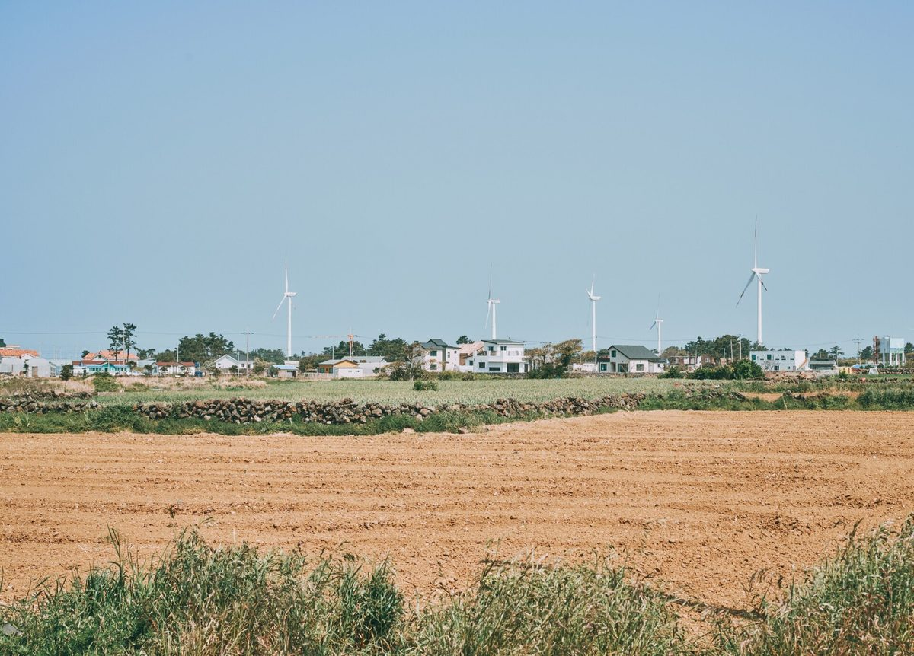

제주 햇빛소득마을 2곳 첫발…제주도, 마을 자부담 15% 가운데 약 70%를 지방소멸대응기금으로 지원 추진

내년 예산에 3억7,000만 원 반영, 2030년까지 10곳가량 목표…애월 용흥리 317.985kW는 보전지구에 막혀 용도 변경 심의 중, 남원읍 마을 495kW는 내년 8월 상업운전 계획, 30일 마감 3차 공모엔 도내 신청 없을 듯
제주특별자치도가 주민이 함께 태양광 발전소를 세워 수익을 나누는 햇빛소득마을의 마을 자부담을 지방소멸대응기금으로 덜어 주기로 하고, 자부담 15% 가운데 약 70%를 지원하는 데 쓸 3억7,000만 원을 내년도 예산에 반영했다. 햇빛소득마을은 주민 70% 이상 동의와 협동조합 설립을 거쳐 마을이 300kW~1MW 규모 태양광을 짓는 사업으로 설비비의 85%는 금융기관 융자, 15%는 마을 몫이며, 도는 이번 지원률이 태양광 지방보조금 보조율 70%를 준용한 것으로 자부담의 절반가량을 지원하는 전남 신안군 등보다 높다고 설명했다. 제주에서는 1차 공모에서 제주시 애월읍 용흥리, 2차에서 서귀포시 남원읍의 한 마을이 뽑혔는데, 용흥리(317.985kW, 총사업비 6억 원, 자부담 9,000만 원)는 주민이 돈을 모아 마련한 마을 공동 토지가 보전지구(4-1등급)로 묶여 절반만 쓸 수 있게 되자 나머지 용량을 운동장과 다목적회관 지붕에 올리기로 하고 토지 용도 변경 심의를 기다리며 사업을 잠시 멈췄다. 남원읍 마을(495kW, 총사업비 9억3,200만 원, 자부담 1억3,400만 원)은 부지와 계통 연결에 걸림돌이 없어 실측과 토목 설계를 하고 있으며, 계획대로라면 12월 인허가, 내년 2월께 착공을 거쳐 8월 상업운전에 들어간다. 다만 1·2차 공모 앞서 도가 벌인 수요조사에서 25개 마을이 참여 뜻을 밝혔던 것과 달리 상당수가 개발행위가 어려운 조건부 지역으로 분류돼, 30일 마감하는 3차 공모에는 도내 신청 마을이 없을 것이라는 전망이 나오고, 4월 기준 도내 배전선로 183개 가운데 21개는 여유용량이 모자라며 행정안전부의 통일된 자부담 지원 기준도 아직 없다. 도는 2030년까지 햇빛소득마을을 10곳가량으로 늘리겠다는 목표를 세웠고, 강창훈 용흥리 이장은 주민 동의율이 96%에 이르렀다며 100년 넘게 지켜 온 공동 토지에서 나는 수익을 마을 전통 보전과 주민 복지에 모두 다시 쓰겠다고 밝혔다.
시민에너지 관점
수요조사에서 손을 든 마을이 25곳이었는데 선정은 2곳에 그치고 3차 공모 신청은 없을 것으로 보인다는 숫자는, 제주 마을을 멈춰 세우는 것이 주민의 의지가 아니라 보전지구 규제와 꽉 찬 배전선로라는 문턱임을 보여 준다. 자부담의 70%를 공공 기금으로 메우면 주민이 제 돈 없이 들어와 책임이 흐려진다는 우려가 나올 수 있지만, 지원 뒤에도 설비비의 약 4.5%(우리 계산)는 마을이 내고 85% 융자를 갚아 나갈 책임도 협동조합에 남으며, 주민 96%가 100년 된 공동 토지를 내놓은 용흥리처럼 주인이 마을이라는 점은 달라지지 않는다. 마을이 함께 모은 땅에서 함께 번 돈이 마을로 돌아가는 구조여야 발전 수익이 외지 사업자의 임대료로 빠져나가지 않고 지역에 남는다. 행정안전부는 제주처럼 지자체가 앞서 내놓은 자부담 지원을 전국 기준으로 정리하고, 마을 공동 토지와 공익형 소규모 발전소의 계통 접속 기준을 3차 선정 전에 함께 내놓아야 한다.
출처: 한라일보 2026-10-30 오소범 원문 보기
済州の「日差し所得村」2カ所が始動…済州道、村の自己負担15%のうち約70%を地方消滅対応基金で支援へ
来年度予算に3億7,000万ウォンを計上、2030年までに10カ所程度を目標…涯月・龍興里の317.985kWは保全地区に阻まれ用途変更の審議待ち、南元邑の村の495kWは来年8月の商業運転を計画、30日締め切りの第3次公募には道内から申請がない見通し
済州特別自治道は、住民がともに太陽光発電所を建てて収益を分け合う「日差し所得村」事業で村が負う自己負担を地方消滅対応基金で軽くすることを決め、自己負担15%のうち約70%を支援するための3億7,000万ウォンを来年度予算に計上した。日差し所得村は、住民の70%以上の同意と協同組合の設立を経て村が300kW～1MW規模の太陽光発電所を建てる事業で、設備費の85%は金融機関の融資、15%は村の負担となる。道は今回の支援率について、太陽光の地方補助金の補助率70%に準じたもので、自己負担の半分ほどを支援する全羅南道新安郡などより高いと説明した。済州では第1次公募で済州市涯月邑龍興里、第2次で西帰浦市南元邑の村が選ばれた。龍興里（317.985kW、総事業費6億ウォン、自己負担9,000万ウォン）は、住民がお金を出し合って用意した村の共有地が保全地区（4-1等級）に指定され面積の半分しか使えなくなったため、残りの容量を運動場と多目的会館の屋根に載せることにし、土地の用途変更の審議を待って事業を一時止めている。南元邑の村（495kW、総事業費9億3,200万ウォン、自己負担1億3,400万ウォン）は用地と系統接続に支障がなく実測と土木設計を進めており、計画どおりなら12月に許認可、来年2月ごろ着工、8月に商業運転に入る。ただ、第1・2次公募に先立つ道の需要調査では25の村が参加の意向を示したものの、多くが開発行為の難しい条件付き地域に分類され、30日に締め切る第3次公募には道内から申請する村がないとの見通しが出ている。4月時点で道内の配電線183本のうち21本は空き容量が足りず、行政安全部の統一的な自己負担支援基準もまだない。道は2030年までに日差し所得村を10カ所程度に増やす目標を掲げ、カン・チャンフン龍興里長は住民の同意率が96%に達したとして、100年以上守ってきた共有地から生まれる収益を村の伝統の保存と住民福祉にすべて再投資すると述べた。
市民エネルギーの視点
需要調査で手を挙げた村は25あったのに、選ばれたのは2カ所にとどまり、第3次公募には申請がない見通しだという数字は、済州の村を立ち止まらせているのが住民の意思ではなく、保全地区の規制と満杯の配電線という壁であることを示している。自己負担の70%を公的基金で埋めれば住民が自腹を切らずに参加し責任があいまいになるとの懸念もありうるが、支援後も設備費の約4.5%（本紙の計算）は村が負担し、85%の融資を返していく責任も協同組合に残る。住民の96%が100年続く共有地を差し出した龍興里のように、持ち主が村であることは変わらない。村が力を合わせて用意した土地で一緒に稼いだお金が村に戻る仕組みであってこそ、発電収益が外部事業者の賃料として流れ出ず地域に残る。行政安全部は、済州のように自治体が先行して打ち出した自己負担支援を全国の基準として整え、村の共有地と公益型の小規模発電所の系統接続の基準を第3次の選定前にあわせて示すべきだ。
出典: 漢拏日報（Halla Ilbo） 2026-10-30 オ・ソボム 原文を読む
济州两个"阳光收入村"起步…济州道拟用地方消亡应对基金承担村庄自付15%中的约70%
明年预算编列3亿7,000万韩元，目标到2030年建成约10个…涯月龙兴里317.985kW因保护区受阻、正待用途变更审议，南元邑村庄495kW计划明年8月商业运行，30日截止的第三轮征集预计济州无村庄申请
济州特别自治道决定用地方消亡应对基金减轻"阳光收入村"（居民共同建设太阳能电站并分享收益的项目）的村庄自付部分，并在明年预算中编列3亿7,000万韩元，用于补贴自付15%中的约70%。阳光收入村须经70%以上居民同意并成立合作社，由村庄建设300kW至1MW规模的太阳能设施，设备费的85%来自金融机构贷款，15%由村庄自付。道方表示，此次补贴比例参照了太阳能地方补助金70%的补助率，高于补贴自付约一半的全罗南道新安郡等地。济州在第一轮征集中入选的是济州市涯月邑龙兴里，第二轮入选的是西归浦市南元邑的一个村庄。龙兴里（317.985kW，总投资6亿韩元，自付9,000万韩元）原计划使用村民集资购置的村庄共有土地，但该地被划为保护区（4-1等级），只能使用一半面积，于是决定把其余容量装在运动场和多功能会馆屋顶上，目前正等待土地用途变更审议，项目暂时停顿。南元邑村庄（495kW，总投资9亿3,200万韩元，自付1亿3,400万韩元）用地和并网都没有障碍，正在进行实测和土木设计，按计划将于12月办理许可、明年2月前后开工、8月投入商业运行。不过，道方在第一、二轮征集前开展的需求调查中有25个村庄表示有意参与，但其中许多被归为难以进行开发行为的附条件地区，因此有预计称，30日截止的第三轮征集中济州将没有村庄申请。截至4月，道内183条配电线路中有21条余量不足，行政安全部也尚未制定统一的自付补贴标准。道方定下到2030年建成约10个阳光收入村的目标；龙兴里里长Kang Chang-hoon表示，居民同意率高达96%，守护了100多年的共有土地所产生的收益将全部再投入村庄传统保护和居民福利。
市民能源视角
需求调查中有25个村庄举手，最终入选的却只有2个，第三轮预计无人申请，这组数字说明，让济州村庄止步的不是居民的意愿，而是保护区管制和已经饱和的配电线路这道门槛。有人担心，用公共基金填补七成自付会让居民不掏自己的钱就加入，责任变得模糊；但补贴之后，村庄仍要承担设备费的约4.5%（本报计算），偿还85%贷款的责任也仍在合作社身上。正如96%的居民拿出百年共有土地的龙兴里所示，村庄是主人这一点并没有改变。只有在村民共同凑钱购置的土地上一起赚到的钱回流村庄，发电收益才不会以租金形式流向外地企业，而是留在当地。行政安全部应把济州这类地方政府率先推出的自付补贴整理为全国标准，并在第三轮评选之前一并公布村庄共有土地利用和公益型小规模电站并网的标准。
来源: 汉拏日报（Halla Ilbo） 2026-10-30 Oh So-beom 查看原文
Jeju's first two Sunlight Income Villages get under way as the province moves to cover about 70% of villages' 15% self-funded share from its regional decline fund
370 million won set aside in next year's budget, with a goal of about 10 villages by 2030; Aewol's Yongheung-ri (317.985kW) is held up by a conservation zoning review, a Namwon-eup village (495kW) plans commercial operation next August, and no Jeju village is expected to apply in the third round closing on the 30th
Jeju Special Self-Governing Province has decided to use its fund for responding to regional population decline to ease the share that villages must pay themselves under the Sunlight Income Village programme, in which residents jointly build solar plants and share the income, and has put 370 million won into next year's budget to cover about 70% of that 15% self-funded share. To join the programme a village needs the consent of at least 70% of residents and must set up a cooperative to build a solar plant of 300kW to 1MW, with 85% of equipment costs financed by bank loans and 15% paid by the village; the province said its support rate follows the 70% rate used for local solar subsidies and is higher than in places such as Shinan County in South Jeolla, which covers about half of the self-funded share. In Jeju, Yongheung-ri in Aewol-eup, Jeju City, was selected in the first round and a village in Namwon-eup, Seogwipo City, in the second; Yongheung-ri (317.985kW, total cost 600 million won, village share 90 million won) planned to build on village common land that residents had bought with pooled money, but because the land lies in a conservation zone (grade 4-1) only half of it can be used, so the remaining capacity will go on the village sports ground and the roof of its multipurpose hall, and the project is paused while a change of land use awaits review. The Namwon-eup village (495kW, total cost 932 million won, village share 134 million won) faces no obstacles over its site or grid connection and is surveying and drawing up civil works designs, aiming, if all goes to plan, for permits in December, construction from around February and commercial operation in August next year. However, although 25 villages expressed interest in a provincial demand survey before the first two rounds, many were classified as conditional areas where development is difficult, and no Jeju village is expected to apply in the third round that closes on the 30th; as of April, 21 of the province's 183 distribution lines lacked spare capacity, and the Ministry of the Interior and Safety has yet to set a uniform standard for supporting villages' self-funded share. The province aims to reach about 10 Sunlight Income Villages by 2030, and Kang Chang-hoon, head of Yongheung-ri, said resident consent reached 96% and that all income from common land the village has kept for more than 100 years will be reinvested in preserving village traditions and residents' welfare.
Citizen Energy View
Twenty-five villages raised their hands in the demand survey, yet only two were selected and none is expected to apply in the third round, figures that show what is stopping Jeju's villages is not residents' will but the barriers of conservation zoning and saturated distribution lines. Some may worry that filling 70% of the self-funded share with public money lets residents join without putting in their own money and blurs responsibility, but even after the support the village still pays about 4.5% of equipment costs (our calculation), the cooperative still carries the duty to repay the 85% loan, and, as in Yongheung-ri where 96% of residents put forward century-old common land, the village remains the owner. Only when money earned together on land the village assembled together flows back to the village does generation income stay local instead of leaving as rent to outside developers. The Ministry of the Interior and Safety should turn self-funding support such as Jeju's, which local governments have introduced first, into a national standard, and publish rules on using village common land and on grid connection for small public-interest plants before the third-round selection.
Source: Halla Ilbo 2026-10-30 Oh So-beom Read the original